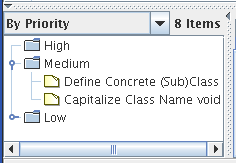

ArgoUML's "To Do" Pane helps keep designers on track by reminding them of what needs to be done. Items in the To Do pane can be personal reminders entered by the designer, but most of them are generated by design critics. Design critics in ArgoUML continuously analyze the design looking for incomplete or problematic areas. When a potential problem is found, the critic produces a "to do" item and adds it to the list in the ToDo Pane. Likewise, when you resolve an identified problem, the item will be removed from the list.
Clicking on an item in the "to do" list will display information about the potential problem in the ToDoItem tab of the Details Pane and will highlight the "offending" part of te design in red.
When working with a large design, there can be a large number of outstanding problems and issues that need to be considered before the design is completely done. This can make the "to do" list rather long. To manage your "to do" list, you can group items by priority, type of decision supported, offending design element, or other ways.
Back to ArgoUML Tours
Back to ArgoUML Home